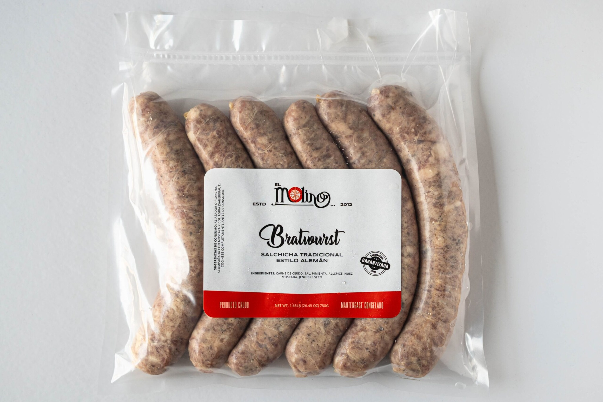
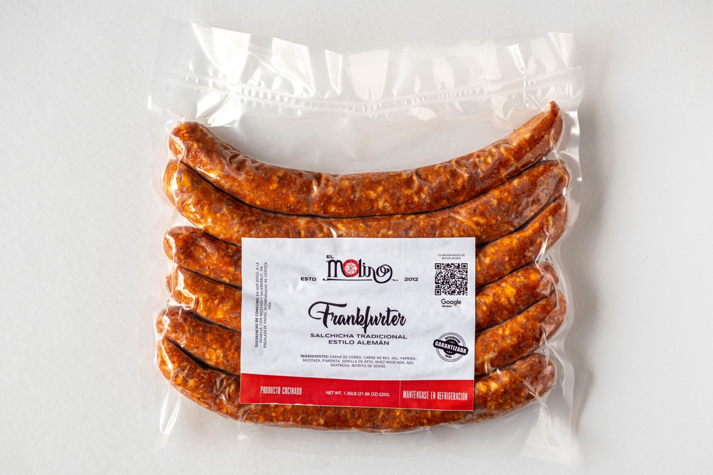
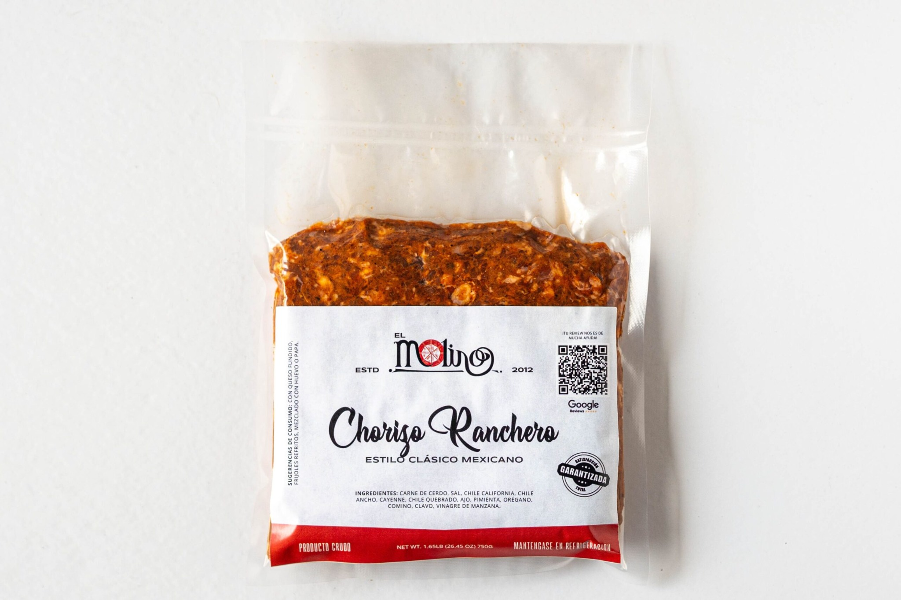
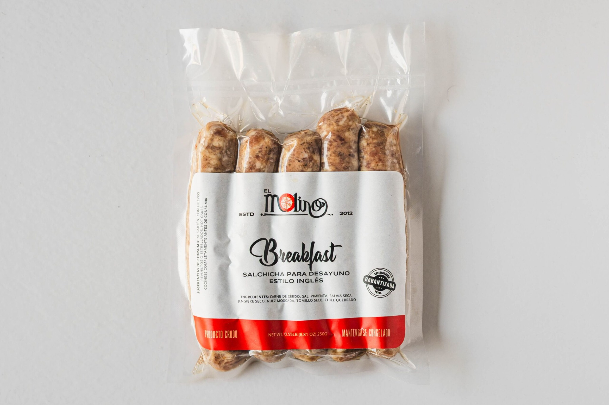
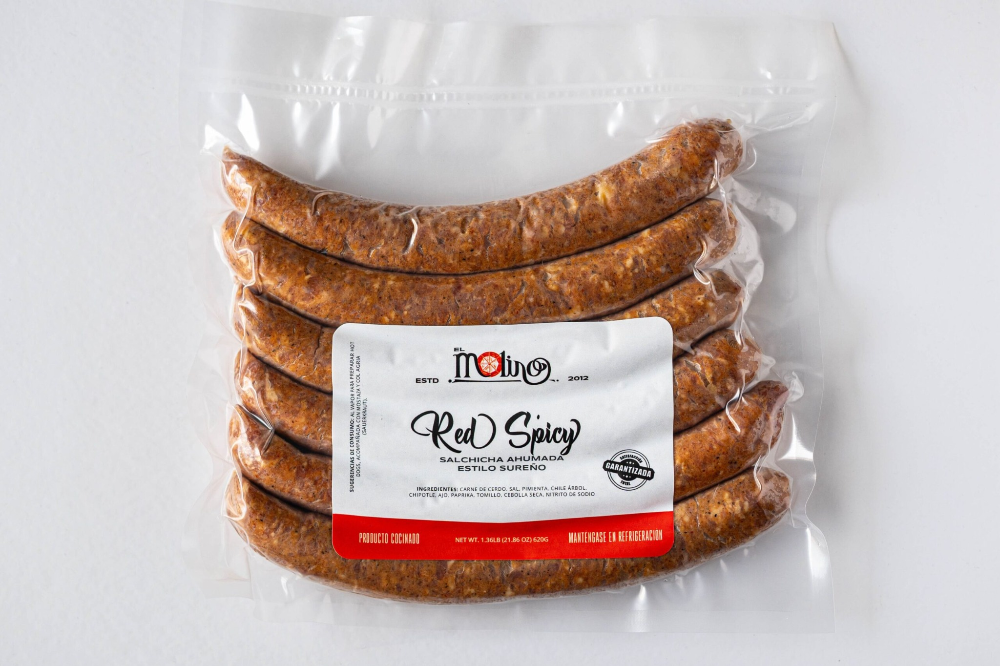
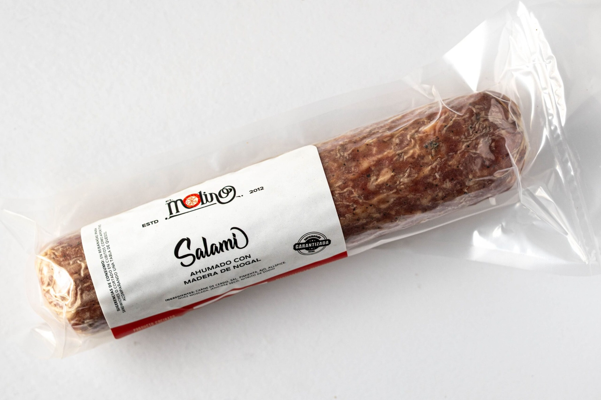
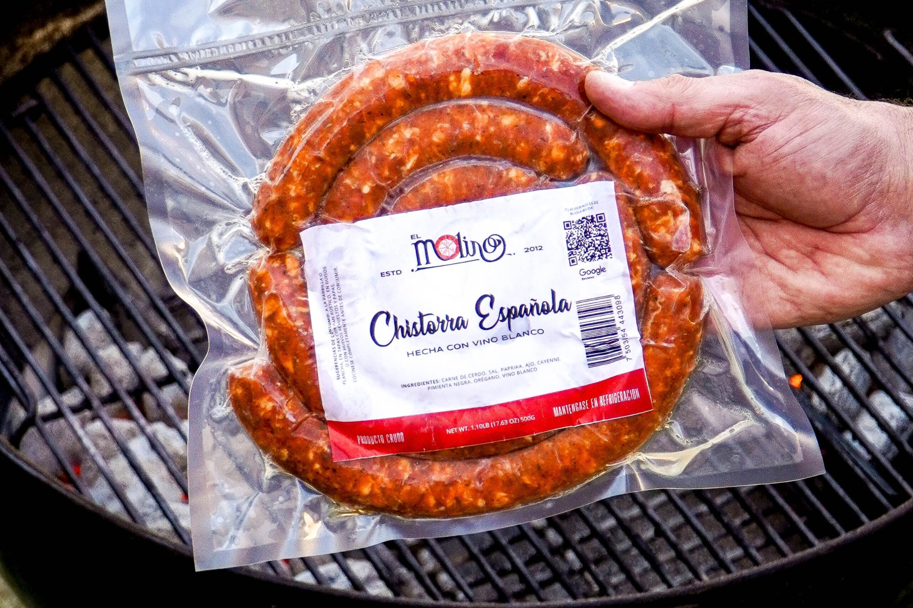

ESTILO ALEMÁNBratwurst
Salchicha tradicional alemana, suave, especiada y perfecta para el asador.
🔥 Ideal para asar o en sartén🍺 Perfecta con cerveza artesanal
Desde 2012, en Mexicali, elaboramos embutidos gourmet con carne 100% real, ingredientes de calidad y recetas tradicionales.

ESTILO ALEMÁNSalchicha tradicional alemana, suave, especiada y perfecta para el asador.

ESTILO ALEMÁNClásica salchicha tipo Viena, jugosa y de textura delicada.

ESTILO MEXICANOSabor profundo, especias tradicionales y una textura carnosa excepcional.

ESTILO INGLÉSSalchicha para desayuno, aromática y con una mezcla de especias delicada.

AHUMADA / PICANTEAhumada, intensa y con un picante equilibrado para los que buscan carácter.

AHUMADOSalami artesanal de perfil profundo, ideal para tablas y momentos especiales.

CON VINO BLANCOJugosa, aromática y elaborada con especias que recuerdan a la cocina española.
En El Molino llevamos desde 2012 elaborando embutidos artesanales en Mexicali, inspirados en la tradición alemana y en el auténtico sabor de la buena mesa.
Utilizamos carne real, especias seleccionadas y recetas perfeccionadas con el tiempo para ofrecer productos hechos con pasión, consistencia y respeto por el oficio.
Conoce más sobre nosotros →Aquí respondemos las dudas más comunes sobre nuestros productos, pedidos, envíos y más. Si no encuentras tu respuesta, contáctanos.
Sí. La disponibilidad, cobertura y costo se confirman al momento de hacer tu pedido. Para pedidos fuera de Mexicali contáctanos para revisar opciones de envío.
Sí. Atendemos restaurantes, comercios, eventos y compras de volumen. Escríbenos para recibir información de presentaciones y condiciones comerciales.
Mantén los productos refrigerados o congelados según las indicaciones del empaque y evita romper la cadena de frío.
Estamos en Mexicali, Baja California. Contáctanos antes de visitarnos para confirmar disponibilidad y horario.
Trabajamos con carne real, especias y recetas artesanales. Cada producto puede tener una formulación distinta; revisa su etiqueta si tienes restricciones alimentarias.
Puedes iniciar tu pedido por WhatsApp o mediante el formulario. Te confirmaremos disponibilidad, total y forma de entrega.